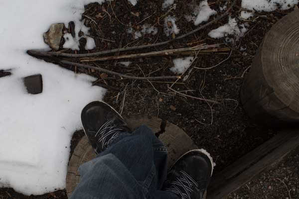
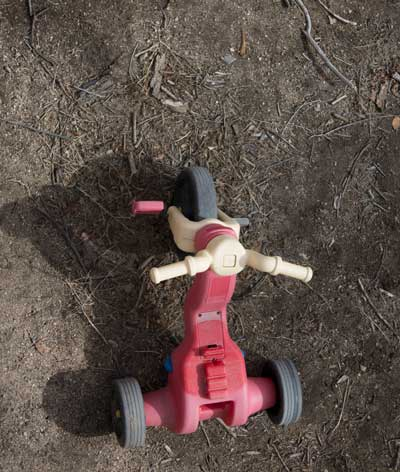
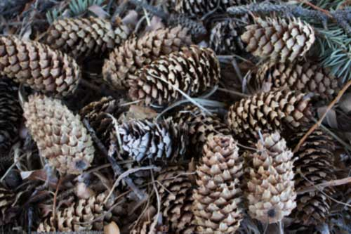
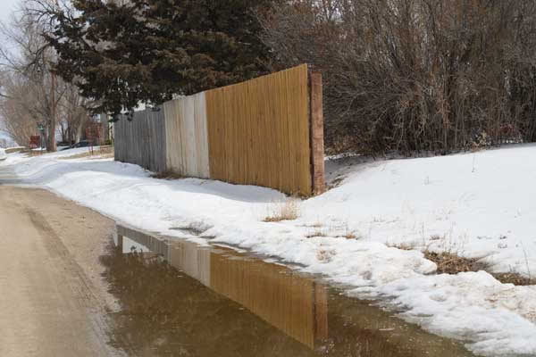
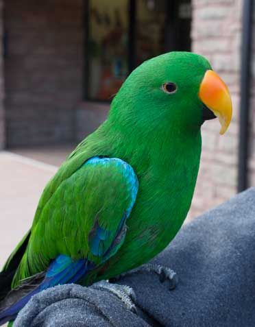
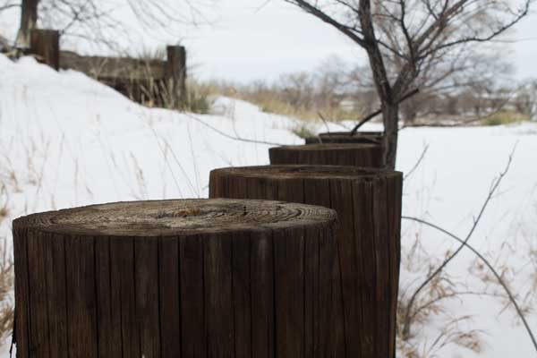
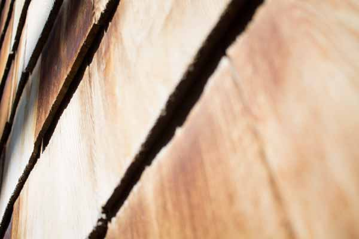
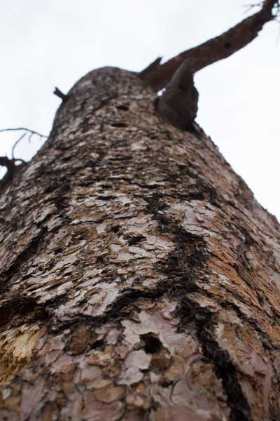

Perspective
Perspective can take an ordinary object and make it look very interesting. You have three types of perspective. There’s Bird’s-eye view, Average frontal (normal) and then there’s Worm’s-eye view.
Birds-eye view is anything you’re looking down on. You don’t need to be extremely high for something to be counted as bird’s-eye view, just pointing your camera down at the ground counts.
  Normal view is anything that you are not looking up at or down on.
  Worm’s-eye view is anything that your are looking up at. Like bird’s eye, you don’t have to be laying on the ground for something to be worm’s eye. Anything you’re looking up at is a worm’s eye view.
 